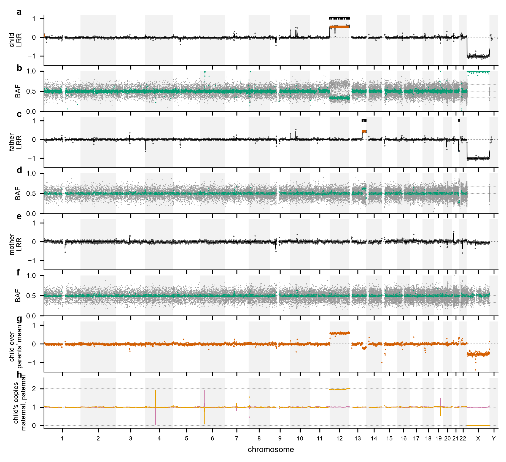
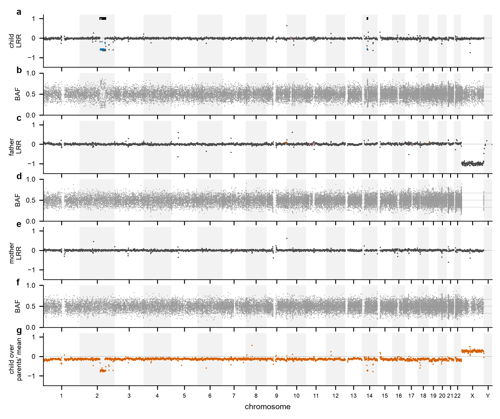
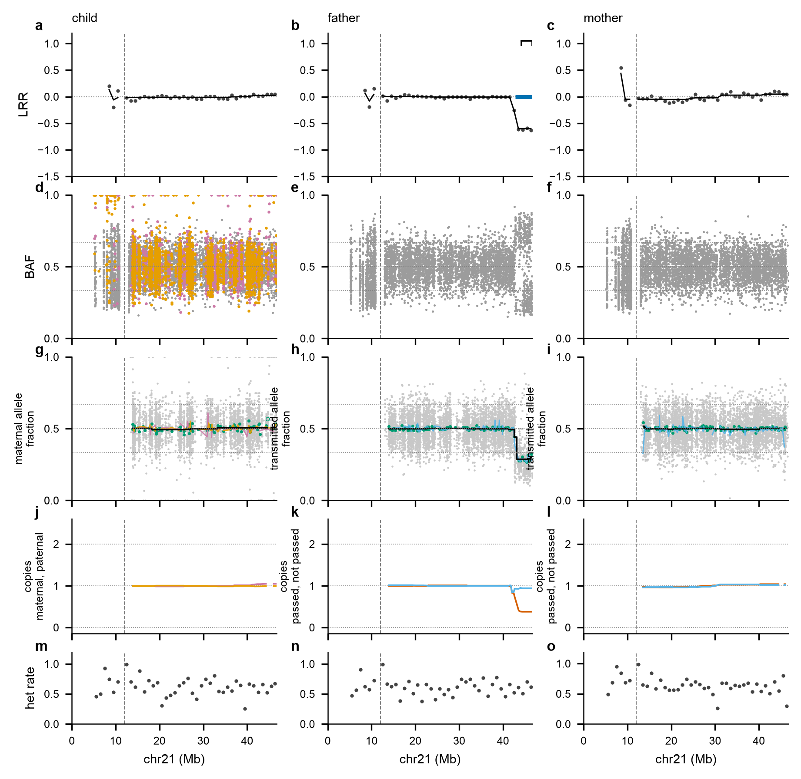
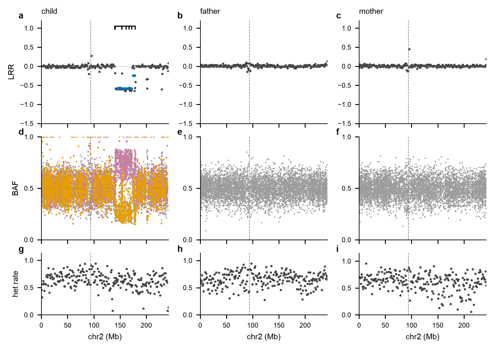

Depth, B-allele bands and transmission phasing from one trio VCF: every gain, loss, copy-neutral loss of heterozygosity and uniparental disomy, with its share of cells, its parent of origin, whether the parent's two copies are one homologue or two, and its edges at site resolution. No alignments, no array, no joint cohort call.
Illumina's DRAGEN 3.7.6 re-analysis of the 1000 Genomes high-coverage genomes (AWS Open Data), three per-sample VCFs merged into one trio VCF each. Nothing here was tuned to them; the events were known from NGS-DOSE's alignment-free karyotype and checked against DRAGEN's own CNV caller afterwards.




Each chromosome figure has five rows per member; the genome figure has the first two per member plus the within-family depth and the child's parental copies. The raw data stay in every figure: the smoothed tracks sit beside them, never instead of them. The full guide, with pattern cards of what each kind of event looks like and every column explained, is written beside every page: guide.html.
One pass over the PASS biallelic SNVs of a trio VCF (GATK joint calls, or per-sample calls merged with bcftools merge -0). Three signals, one reading.
triokaryo mock.Python 3.9 or later with pysam, numpy and matplotlib; or the container.
pip install git+https://github.com/jlanej/triokaryo
triokaryo run --vcf trio.vcf.gz --pedigree trios.tsv --child KID --out out/KID \
--panel 1kg-dragen --events other_calls.tsv --gc-track gc.tsv
triokaryo cohort --runs 'out/*' --out cohort --events other_calls.tsv--panel 1kg-dragen is the shipped panel of twelve public 1000 Genomes genomes called by DRAGEN; for another pipeline build one from that cohort (triokaryo panel --vcfs ..., or from a first pass's bins.tsv files with --runs). Without a panel the reference's own depth structure reads as events. The two trios above reproduce with docs/example/fetch_1kg_trio.sh.
| output | what it holds |
|---|---|
index.html | the trio's page: events, the given events and their matches, every figure with its caption and key |
events.tsv | one row per event: type, source (depth, bands, phased), share of cells three ways, parent of origin two ways, one homologue or two, edges at site resolution, inheritance, Mendelian errors, notes |
phased.tsv, bins.tsv | every window of the phased tracks (fraction, step fit, copies, auxiliary tracks); every bin of the depth tracks |
figures/ | PNG, SVG and PDF with no legend or title in the image: a sidecar with title, caption and key, and a legend image, beside each |
cohort/ | the cohort report: the counts, the landscape figure (events per chromosome; one row per trio), every event sortable and filterable with links to its trio's page and figure, the trios with their quality readings, the concordance with the given events, the segments set aside, and the guide |
guide.html | beside every page: how to read every row, colour, call and column, with pattern cards; also triokaryo guide --out |